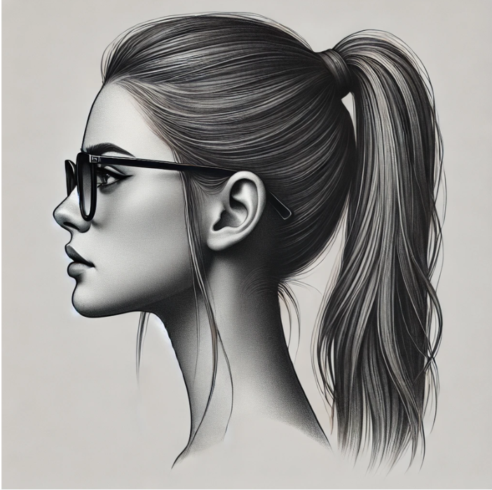

Un grand choix
Des montures pour tous les styles et tous les budgets, et des verres de fabrication française.
Paris 9e · Optique et Audition
Lunettes, lentilles et aides auditives : des conseils personnalisés pour votre confort visuel et auditif.

Offre du moment
Pour tout achat d'une paire de lunettes de vue avec verres progressifs, la seconde paire est offerte.
J'en profite*Offre fictive, dans le cadre d'un projet scolaire.
Chez Optique et Audition Wave, votre boutique spécialisée en solutions auditives et optiques située au cœur de Paris, au 49 rue de Trévise dans le 9e arrondissement. Notre équipe de professionnels dévoués est à votre service pour vous offrir des conseils personnalisés et des produits de qualité afin d'améliorer votre confort visuel et auditif. Que vous cherchiez des lunettes tendance, des lentilles de contact, ou des aides auditives de dernière génération, nous vous accueillons avec plaisir pour répondre à tous vos besoins en matière de santé visuelle et auditive. Découvrez une expérience unique et sur mesure chez Optique et Audition Wave.
Bienvenue dans notre espace optique, où le style rencontre la clarté. Avec l'assistance experte de notre Opticien-conseil Wave Optique plongez dans une sélection soigneusement choisie de montures tendance, de verres de haute qualité et de lentilles adaptées a votre style de vie.
Soyez les bienvenus dans notre espace Audition, où la qualité du son se marie à une expertise personnalisée. Avec l'accompagnement attentif de notre Audioprothésiste, explorez une gamme d'aides auditives discrètes et de dernière génération, adaptées à votre audition et à votre quotidien.
Choisissez votre créneau en ligne ou par téléphone.
Votre spécialiste vous conseille et vous essayez nos modèles.
Réglages, ajustements et suivi inclus après votre achat.
Des montures pour tous les styles et tous les budgets, et des verres de fabrication française.
Un opticien et un audioprothésiste à votre écoute, du premier bilan au suivi.
Réglages, entretien et contrôles réguliers, pour rester bien équipé dans la durée.
★★★★★
« Un accueil chaleureux et des conseils très précis. J'ai trouvé mes lunettes en une visite. »
Camille R.
★★★★★
« Mon audioprothésiste a pris le temps de tout m'expliquer. Mes appareils sont presque invisibles. »
Michel D.
★★★★★
« Un vrai suivi après l'achat, je recommande sans hésiter. »
Sofia B.
Un contrôle tous les un à deux ans est conseillé, ou dès que vous ressentez une gêne : maux de tête, fatigue visuelle, vision floue.
Dans notre boutique, le bilan auditif est offert et sans engagement.
Oui, nous travaillons avec la plupart des mutuelles. Apportez votre carte, nous nous occupons du reste.
Ce n'est pas obligatoire pour l'optique. Pour un bilan auditif, nous vous conseillons de réserver votre créneau.
Prenez rendez-vous dès aujourd'hui, nous vous accueillons du lundi au samedi.
Prendre rendez-vous